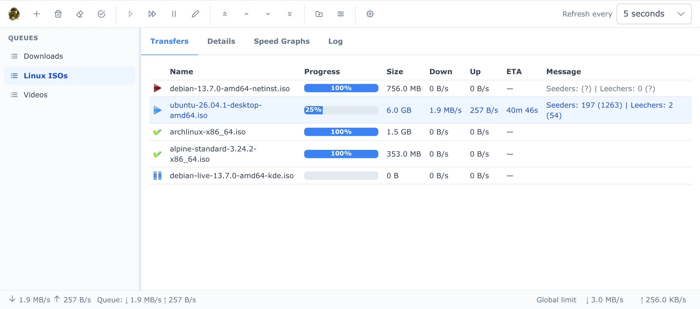

Web Interface
The web interface lets you control FatRat from a browser, on the same machine or over the network. It does almost everything the desktop app does: add and manage transfers and queues, watch their progress, and change the settings. It works on a phone too.

Opening it
The web interface is off by default. Running on a Server explains how to turn it on, set a password and use HTTPS.
Once it is on, open http://server:port/ in a browser. The default port is 2233, so on the machine FatRat runs on that is http://localhost:2233/. With HTTPS turned on, use https:// instead.
The browser asks for a user name and a password. Any user name works. The password is the one set in FatRat's Web Interface settings (the default is fatrat, so change it). If the password is empty, the browser doesn't ask.
Layout
- The toolbar at the top holds the actions. Hover over a button to see its name and key. On the right are Refresh every, which sets how often the page fetches new data from FatRat, and the Shortcuts button.
- The Queues list on the left. Click a queue to show its transfers. Right-click a queue for Resume All, Stop All, Properties and Delete Queue. A warning sign next to a queue means there is a problem with its watch folder; hover over it to see what.
- Four tabs on the right:
- Transfers: the transfers in the selected queue, with Name, Progress, Size, Down, Up, ETA and Message columns.
- Details: for one selected transfer. Under Download transfer data you can download the transfer's file to the computer the browser runs on. If the transfer is a folder, expand the tree and click a file to download it. For a torrent, it also shows the progress and availability of its pieces, its speed, totals, share ratio, magnet link and comment, and its files, where you can change each file's Priority.
- Speed Graphs: Transfer Speed for the selected transfer and Queue Speed for the selected queue.
- Log: the Global Log and the Transfer Log of the selected transfer.
- The status bar at the bottom shows the total speed of all queues and the speed of the selected queue. If the page can't reach FatRat, it shows Connection lost, and what you see may be out of date.
Adding transfers
Click New Transfer (the + button) or press N. In the New Transfer dialog:
- Queue
- The queue to add to. It starts as the selected queue.
- URLs (one per line)
- The links to download, for example http, https, ftp or magnet links.
- Local files (e.g. .torrent)
- Click Choose files… to upload files from the computer the browser runs on, such as
.torrent files or .metalink and .meta4 files. FatRat adds one transfer for each file. While files are chosen, the URLs you typed are ignored.
- Target directory
- Where to save the download, on the machine FatRat runs on. It starts as the queue's target directory. Browse… lets you pick a directory on that machine.
- Download as
- The kind of transfer. Leave it at Automatically detect unless FatRat picks the wrong one.
- Max download speed (KB/s) and Max upload speed (KB/s)
- Speed limits for the new transfers. 0 means no limit.
- Add paused
- Add the transfers without starting them.
Click Add, or press Ctrl+Enter in the URLs or target directory field.
The browser extension
The FatRat browser extension for Chrome and Firefox adds Send link to FatRat to the menu you get when you right-click a link. It opens the link in the web interface's New Transfer dialog, ready to add. To connect it to your FatRat, open Settings → Web Interface and click Set up the browser extension....
Working with transfers
Click a transfer to select it. Ctrl+click adds or removes a transfer from the selection, and Shift+click selects a range. The toolbar actions and the right-click menu work on all selected transfers:
- Resume and Pause
- Start or stop the transfers. A resumed transfer runs when its queue has room.
- Force Resume
- Start the transfers at once, even when the queue is at its limit.
- Delete
- Remove the transfers from FatRat and keep the downloaded files.
- Delete with Data
- Remove the transfers and delete their downloaded files too.
- Delete Completed
- Remove all completed transfers in the selected queue, keeping their files.
- Move to Top, Move Up, Move Down, Move to Bottom
- Change the order of the transfers in the queue. You can also drag transfers to a new place in the list.
- Properties
- Open the Transfer Properties dialog (see below).
The delete actions ask before they delete anything. Extensions can add their own items to the right-click menu of a single transfer.
Transfers and Queues explains the transfer states and how a queue decides which transfers run.
Transfer properties
Select one or more transfers and click Properties (or press E). The Transfer Properties dialog has:
- Comment.
- Max download speed (KB/s) and Max upload speed (KB/s).
- Destination (for an upload, Source), only when one transfer is selected.
- Run on completion: a command to run when the transfer finishes. The hint under it lists the placeholders.
- Options: settings that depend on the kind of transfer, for example for a torrent.
When several transfers are selected, Save applies the values to all of them. See Transfers and Queues for what each setting means.
Queue properties
New Queue creates a queue. Queue Properties changes the selected one, and Delete Queue deletes it. Both dialogs have:
- Name.
- Target directory: where new transfers in this queue are saved.
- Move to directory after completion.
- Watch folder: a folder on the FatRat machine whose files are added to this queue. See Watch Folders.
- Download speed limit (KB/s) and Upload speed limit (KB/s).
- Max active downloads and Max active uploads. In a new queue, these start at 0, which lets only force-resumed transfers run. Set them to at least 1, or to -1 for no limit.
- Count uploads as downloads.
When you delete a queue that still holds transfers, FatRat asks whether to move them to another queue, delete them and keep their files, or delete them with their data. See Transfers and Queues for what the queue settings mean.
Settings
Click Settings (or press O). The Settings dialog has these pages:
- BitTorrent: ports, connection limits, encryption and port mapping. See BitTorrent.
- RSS: turn feed fetching on, set the update interval, and manage the feeds and the rules that pick episodes. See RSS.
- Scheduler: the scheduled actions. See Scheduler.
- Web Interface: the web interface's own settings (port, password, HTTPS) and the browser extension setup.
- Extensions: plugin repositories and plugins. See Extensions.
Most settings are saved when you click OK. RSS feeds and rules and scheduled actions are different: they are saved as soon as you change them, so Cancel doesn't undo them.
Keyboard shortcuts
Press ? or click Shortcuts to show each key on its button. Press ? or Esc to hide them. The shortcuts don't work while you type in a field or while a dialog or menu is open.
| Key | Action |
|---|
N | New Transfer |
D, Del, Backspace | Delete |
Shift+D, Shift+Del, Shift+Backspace | Delete with Data |
C | Delete Completed |
R | Resume |
F | Force Resume |
P | Pause |
E | Properties |
{ | Move to Top |
[ | Move Up (repeats while held) |
] | Move Down (repeats while held) |
} | Move to Bottom |
Shift+N | New Queue |
Shift+E | Queue Properties |
O | Settings |
1 to 4 | Transfers, Details, Speed Graphs and Log tabs |
? | Show or hide the shortcuts |
When the transfer list has the focus (click it once), these keys also work:
| Key | Action |
|---|
Up, Down | Select the previous or next transfer |
Page Up, Page Down | Move 10 transfers up or down |
Home, End | Go to the first or last transfer |
Shift with any of the above | Extend the selection |
Ctrl+A | Select all transfers |
In the New Transfer and Transfer Properties dialogs, Ctrl+Enter saves. On a Mac, Cmd works instead of Ctrl.
On a phone
When the browser window is 768 pixels wide or less, the layout changes:
- The toolbar becomes a top bar with New Transfer, Delete, Resume and Pause. The other actions and Refresh every are in the More actions menu (the ⋮ button).
- The queue list moves into a side panel. Tap the ☰ button to open it and pick a queue. The panel also has a New Queue button. The top bar shows the name of the selected queue.
- Transfers are shown as cards. Tap a card to select it. Touch and hold a card to start selecting several; then tap cards to add or remove them, or tap Select all. Each card's ⋮ button opens the transfer's menu.
- The Settings dialog shows the list of pages first. Tap a page to open it, and tap the page's name at the top to go back.
- The keyboard shortcut hints are not shown.
Help
The Help button (the ? icon at the end of the toolbar) opens this documentation at fatrat.dolezel.info/docs in a new tab.